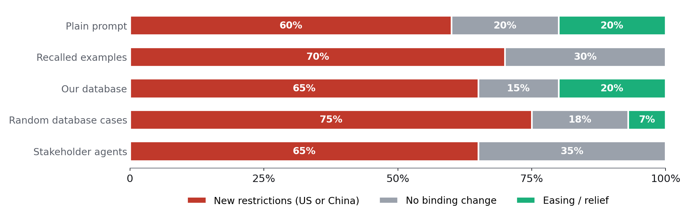
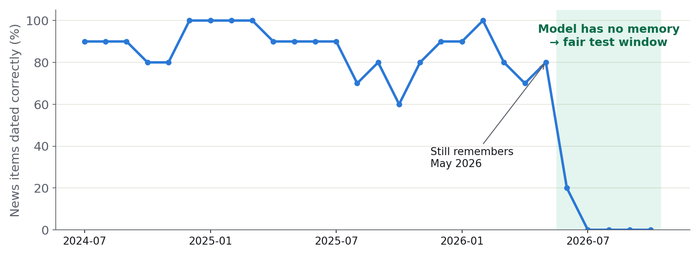
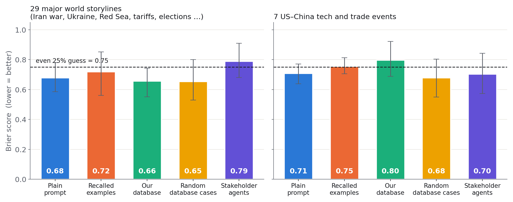
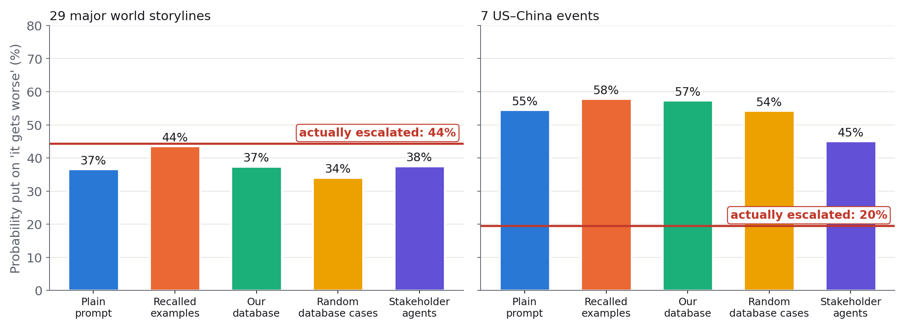

NVIDIA has opened an investigation into its CEO after US intelligence reported that a close associate was a Chinese spy, and Democrats have just won both chambers of Congress. How could US–China AI competition play out over the next 90 days?
Washington or Beijing adds restrictions aimed at named firms, people or transactions, while wider trade talks and supply arrangements continue.
The espionage case triggers sector-wide limits on AI chips, computing or critical inputs. China retaliates or lets its suspended export controls return.
Both governments wall off the investigation and keep easing, for example by extending China's export-control pause beyond 10 January.
Investigations, hearings and rhetoric dominate, but neither government changes binding technology rules.
How these were produced. Codex (an AI model) was given the event plus our tracking database: current US–China storylines, recent US government actions, and five similar past episodes with what followed each. Each scenario carries an exact test, so after 7 February 2027 it can be scored as happened or not. The scenarios were frozen with a digital fingerprint (sha256) on 11 November.

Every approach puts 60–75% on new restrictions from the US, China or both. They disagree mainly on whether easing is possible at all.

We hid the dates on news items and asked the model when each happened. It knows events up to May 2026. Hiding company names did not help: it still recognised 14 of 16 past US–China cases. So a fair test uses only events from June 2026 onward.
Also fixed. The model's tool could search the live web by default, which would let it look up outcomes. Web access is now switched off for every run.

Across 29 major storylines, the single-agent approaches score about 0.65–0.68, a bit better than an even guess (0.75). The stakeholder agents score 0.79, clearly worse. On the 7 US–China events, no approach is clearly better than an even guess yet.
How it's measured. Each approach wrote four scenarios with probabilities for events from June to September 2026. A separate AI judge read what actually happened in the next 30 days and picked the scenario that came true. The Brier score is 0 when all the probability was on what happened, and 0.75 when it was spread evenly at 25% each. Lower is better. Whiskers show the 95% range.

After the 7 US–China shocks, escalation followed in only 20% of cases. In the rest, nothing binding changed within 30 days. Yet every approach put 45–58% on escalation. Across the 29 broader storylines, many of them active wars, escalation followed 44% of the time and the approaches put 34–44% on it, which is about right. The over-reaction is specific to US–China policy shocks, the very type of the Jensen Huang question.
How it's measured. Each scenario was tagged as escalation, no change, or easing. The bars show the average probability each approach gave to escalation. The red line shows how often the scenario the judge picked was an escalation.
For the Jensen Huang question, the agent's most likely outcome is targeted restrictions while trade talks continue, with specific signs to watch for each scenario.
A single AI call, with or without our database, does slightly better than an even guess on genuinely new events. Stakeholder agents made it worse.
After US–China shocks, all approaches over-predicted escalation (about 50% expected against 20% observed), so the Jensen Huang tilt towards new restrictions is probably too strong.
The Jensen Huang scenarios are frozen and will be scored after 7 February 2027.